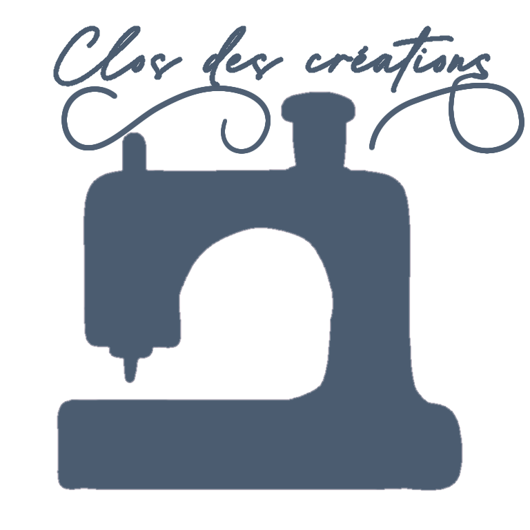

En première, nous avions eu un devoirs pour le cours sur le développement Web: Créer un site Web pour nos professeur. J'ai été chargé de réaliser celui du club Couture de notre lycée. La professeur en charge de ce club nous avait donné un cahier des charges assez vague, ne mentionnant que le besoin d'une page de contact et le style qu'elle voualit avoir pour son site. Ainsi, nous étions en semi autonomie sur le projet, permettant a notre créativité des s'exprimer.
J'ai designé le logo avec un idée simple: Créer une ambiance mignonne et simple, collant avec le reste du site. J'ai ainsi symboliser une machine a coudre et des fils de laine jaillissant autour, tout en choississant une police caligraphique que j'ai légérement modifée afin de garder cet aspect filaire.
Pour le site, j'ai voulu donner un aspect pate a modeler, ce qui colle avec l'aspect créatif du club. J'ai choisis des nuances pastel pour les fond de titre et du corp du site, et un fond blanc pur pour les boites de textes et les cartesde contacs. J4ai aussi pris la liberté d'intégrer un formulaire FramaForm afin de facilité les recrutement. Je n'ai pas renouvellé le Formulaire car les premières de cette année sont censé créer leurs propres site.
L'une de nos consignes étant de faire un site responsive, j'ai créer un support smarthpone pour le site, a l'aide mediaqueries. Je me suis dailleurs inspiré de mon système pour faire le Responsive Design de ce site portfolio; J'ai aussi repris l'idée d'une page d'entrée contenant uniquement un bouton, mais d'une manière plus poussé que ce que j'avais fais a l'époque, intégrant du JavaScript et des notions plus poussé de CSS et HTML